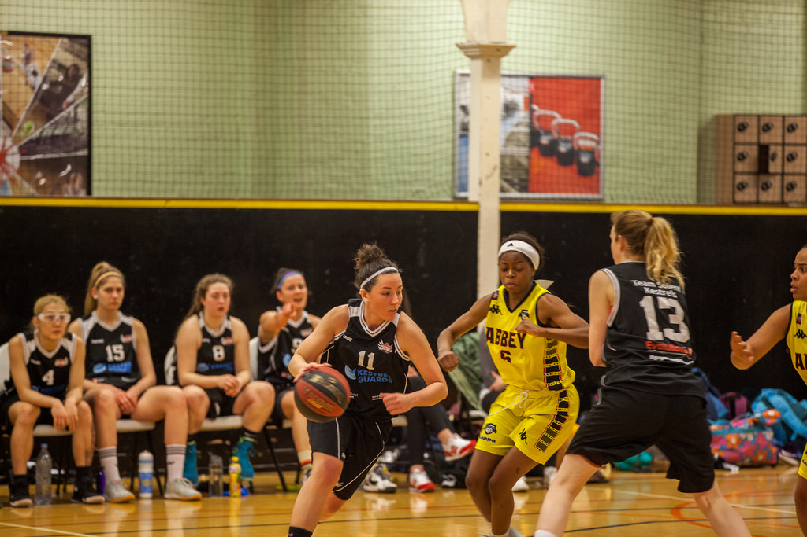

Football
I played football when I was 7 years old. I played for Bishopstown. There were 20 other girls who played it with me. Our coaches name was Orla. She was very nice. We had matches every Sunday and played against other areas

Basketball
I played basketball in secondary school. It was on every Wednesday. Every Friday we would have matches. My coaches name was Andrea. We wore shorts and basketball shirts. There were 25 girls on the team. It is a very good sport and really improves your fitness level.

Karate
I did karate for 5 years. I got to 2nd Dan Black Belt. The type of karate I did was Funokoshi Shotokan Karate. I went to England to represent the team in an international competition being held there. I made some great friends and learned a lot of self defence moves.

Swimming
I used to be part of the swim team. I got to level 6 and nearly made it to competition. I absolutely loved swimming. Its a good skill to have. It is also a good low impact exercise. I used to have a black and pink swim suit that I loved and a black cap. I went to swimming lessons from the age of 5 to 13.